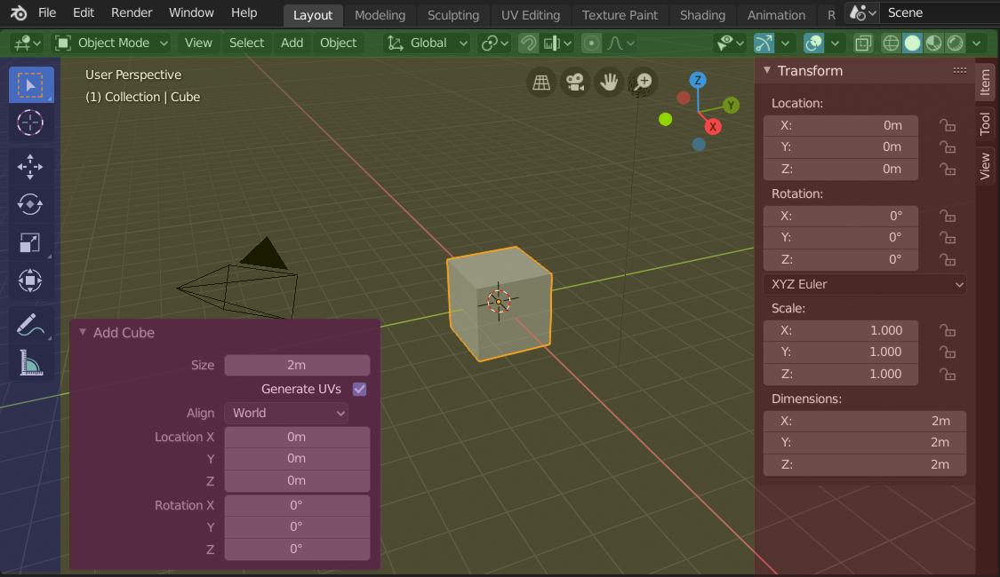

区块¶
Blender中的每个编辑器都分成几个区块(Region)。 区块可以具有较小的结构元素，如 选项卡和面板 ，其中包含按钮、控件和小部件。

在添加一个立方体后，3D视图编辑器显示的侧栏和调整上一步操作面板的区块。¶
标题栏(绿色)，主区块(黄色)，工具栏(蓝色)，侧栏(红色)和调整上一步操作面板(粉色)。
主区块¶
至少有一个区块始终可见， 被称为主区块。它是编辑器中最重要的部分。
每个编辑器都有特定的用途，所以每个编辑器的主区块和附加区域的功能都是不一样的。更多信息见 编辑器 章节中各编辑器对应文档。

工具栏¶
The Toolbar (on the left side of the editor area) contains a set of interactive tools. T toggles the visibility of the Toolbar.
进一步了解: 工具栏。
工具设置¶
顾名思义， 工具设置 (位于编辑器的顶部/底部)包含活动工具设置。 与使用 在底部/顶部显示 操作调整其位置一样，也可以通过标题栏的上下文菜单切换其显示/隐藏。